小暮千秋
10月に､ 少量の水を入れたスチール缶を熱して､フタを閉めて冷水に入れるとスチール缶が潰れる､という実験を行いました｡
その授業の中では､｢温度が上昇する事で水が水蒸気になり､粒の動きが激しくなった状態で冷却するとスチール缶内部の空気の体積が減り､
外気に耐えられなくなった｣という説明がされました｡
この資料では､この缶が潰れるメカニズムについてもう少し詳しく調べました｡
まずスチール缶に少量の水を入れて熱すと､スチール缶内部の水は水蒸気となります｡
水が水蒸気となる際には周りの熱を一緒に奪います｡
暑い日に水をまく｢打ち水｣も暑さを水に奪ってもらうためです｡
缶の熱は水により吸収され水蒸気になり､缶の中の空気が押し出されます｡
水が水蒸気になると体積は約1700倍になり､缶はほぼ水蒸気で満たされます｡
フタがされると､水蒸気が閉じ込められます｡